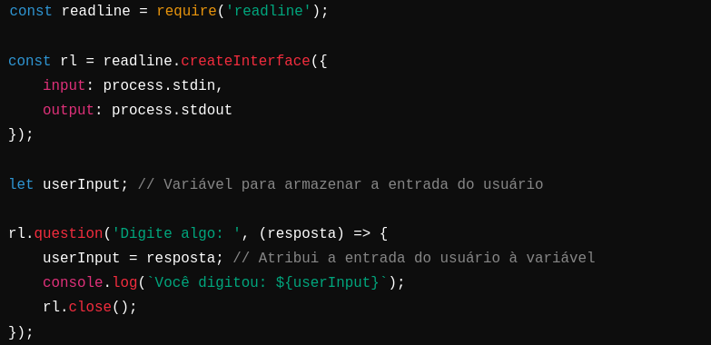

Estou utilizando o Firefox e o editor VS Code
Instalado o Node.js através do site oficial
Escolhi o http-server do Node.js, através do http-server
Há duas maneiras de usar o código JavaScript.
Inserir o código direto no html:
<script>
alert('Olá Mundo!');
</script>
Inserir o código direto por meio de um arquivo .css:
<script src="01-HelloWorld.js"> </script>
console.log('num: ' + num);
A outra forma de utilizar o método console é a abaixo:
console.log('num: ' , num);
Diz respeito ao local em que podemos acessar a variável ou função (quando for o caso).
Existem diversas ocasiões que o JS pode retornar valor true ou false, não dependendo somente de se tratar de uma variável do tipo boolean
| Tipo de Valor | Resultado |
|---|---|
| undefined | false |
| null | false |
| Boolean | True or false |
| Number | O resultado é false para +0, -0 ou NaN; caso contrário, é true |
| String | O resultado é false se a string for vazia (o tamanho é 0); caso contrário, é true (tamanho >= 1) |
| Object | True |
O operador == pode causar confusão, melhor utilizar === quando se quer comparar valores de tipo igual, e se forem do mesmo objeto.
Pode ser utilizado somento para quando a condição for true:
var num = 1;
if (num === 1){
console.log('num is equal to 1');
}
O tradicional if e else:
var num = 1;
if (num === 1){
console.log('num is equal to 1');
} else {
console.log('num is not equal to 1, the value of num is' + num);
}
Ou o operador ternário ?
Por exemplo essa instrução:
if (num === 1){
num--;
} else{
num++;
}
Pode ser feito com o ternário dessa forma:
(num === 1) ? num-- : num++;
var mont = 5;
Para atribuir o que for digitado pelo usuário a uma variável em Node.js usando o módulo readline, você pode fazer isso dentro da função de retorno de chamada fornecida para o método question(). Aqui está um exemplo simples:
Após fazer o código acima, para executar digite: node nomeDoScript.js
for, while e do while, identicos aos do C#
// funções no js
function digaOla(){
console.log('Olá!!!!');
}
digaOla();
//Passar argumentos para uma função:
function saida(texto){
console.log(texto);
}
//Para usar a função, passa-se o argumento
saida('Eaee!!');
//Pode usar mais de um argumento
saida('Fala fi', 'Eae mano'); // só um argumento é usado.